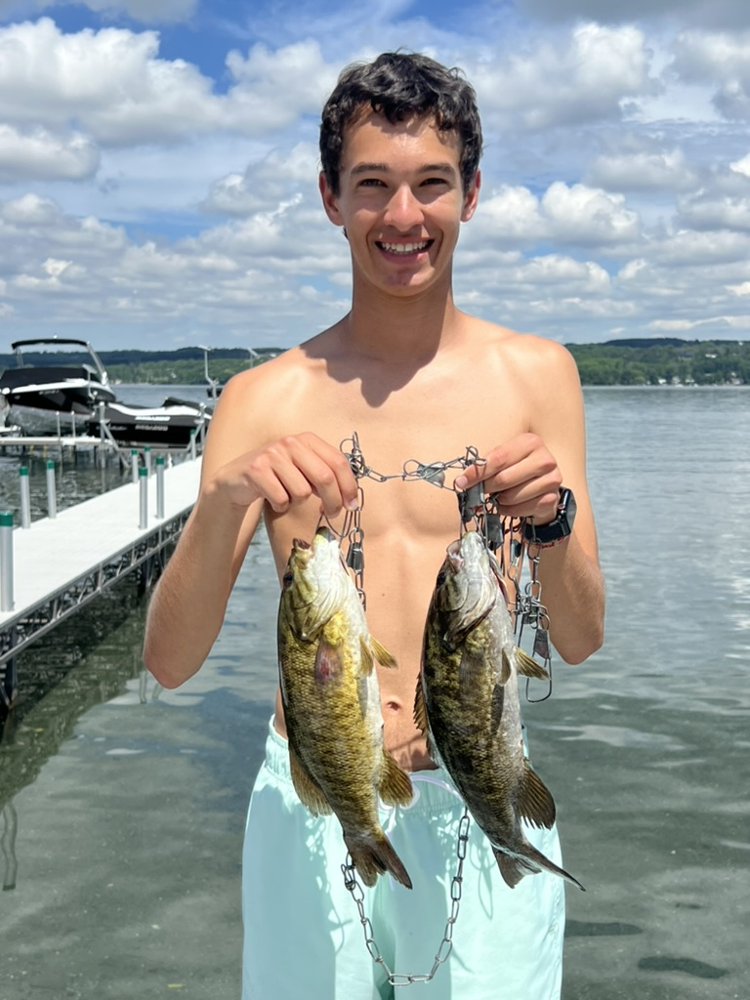
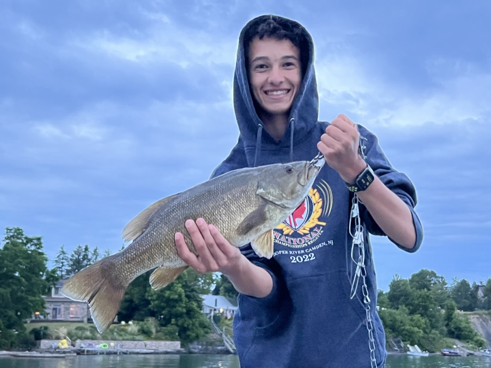
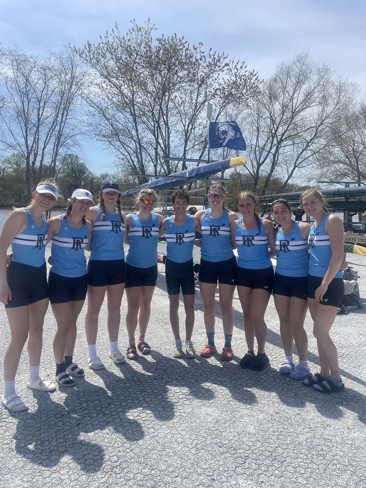
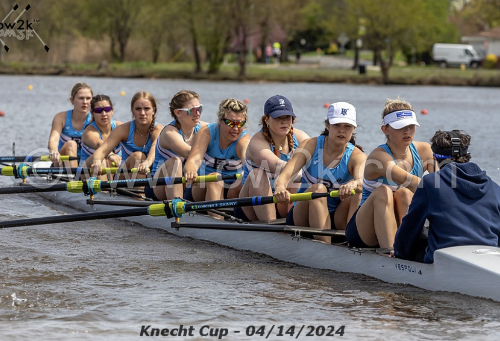

|
|
|
|---|
My name is Cody Pinsky. Im a sophomore at URI pursuing a major in marine biology and a minor in computer science. I am from Syracuse NY and have quite a few hobbies listed below. What you would not guess from me is that I would rather stay home and be relaxing to a good show or playing a fun game. More what nobody knows about me is I have a blue stripe in my left eye and I overcame a speech issue at such a young age. These last two things is what makes me special.
Majority of the time I go fishing for bass. Sometimes I catch perch but that is very rare for me.
|  |  |
|---|
My position is called a coxswain. Im the one in the boat that steers, controls the rowers, executes commands and pass directions from coach to rower.
|  |  |
|---|
my favorite thing to bake is a key lime pie followed by a good apple pie. Then more simple is pumkin cookies and pumpkin bread.
I consider myself to be an apple store. While I dont have every product, I seem to have a majority of them. If you look at the general product category, I only dont have the Vision Pro.